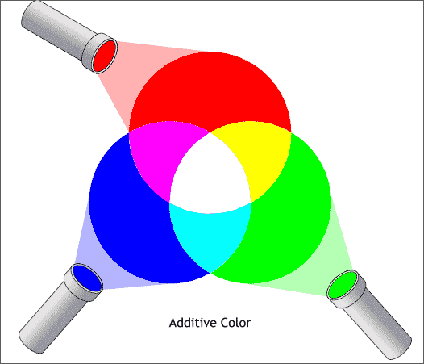
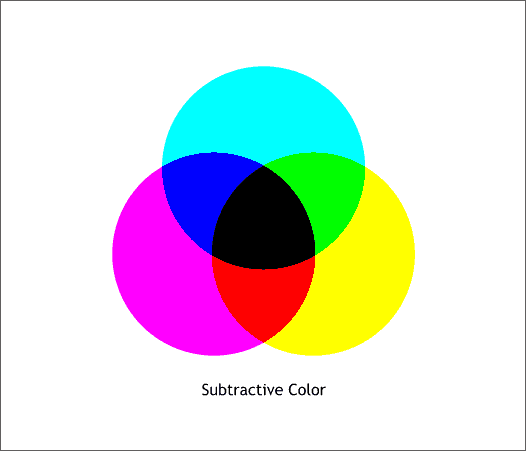

MATLAB ile İmge İşlemeye Giriş
Bu kaynaktan dilediğiniz şekilde yararlanabilirsiniz. MATLAB ile ilgili eğitim videoları için Açık Ders projesine göz atabilirsiniz.
İlk yazıda hızlıca MATLAB programlamanın temellerini atmıştık. Şimdi de sıra geldi görüntü işlemek için gerekli temellere. Bundan böyle ilgi alanımıza resimler ve videolar girecek! Videoların arka arkaya gelen (yani içinde zamansal bilgi barındıran) imge/resim dizisi olduğunu biliyoruz.
Cevap aradığımız sorular basitçe şöyle:
- Resimleri koda nasıl aktarırız?
- Programlarımızda kullanmak istesek nasıl ifade ederiz, renkleri nasıl elde ederiz?
- Resimlere nasıl matematiksek işlemler uygularız?
Bugün resim türleri, diskten resim okuma ve diske geri yazma, resim filtreleme gibi temellere değinelim. Videolarla çalışma işini de başka bahara bırakalım.
ver komutunu girerek öğrenebilirsiniz. Örneğin bendeki MATLAB'de Image Processing Toolbox sürüm 6.0 yüklü.Yine Matlab Programlamaya Giriş'te yaptığımız gibi işlere başlamadan önce clear ile ortamdaki değişkenleri temizleyelim ve clc ile de komut ekranını temizleyelim. Ve artık konumuza geçelim.
clear clc
Başlarken
Bilindiği üzere resimler farklı renklere sahip küçük küçük blokların bir araya gelmesiyle oluşur. Yani resimlerin yapıtaşları piksel adını verdiğimiz bu bloklardır. Eğer ekran çözünürlüğünü biraz azaltıp ekrana yaklaşırsanız pikselleri rahatlıkla gözlemleyebilirsiniz.
Bahsedilen pikselleri değerler olarak düşünürsek resmi de bu değerlerden oluşan matris olarak düşünmeliyiz. Bu değerleri kaç seçersek deri rengine benzer olur, en yüksek kaç seçebiliriz, skaler mi olmalı yoksa vektör olabilir mi gibi soruları cevaplamalıyız. Ancak bu sorulara çözüm getirdiğimiz takdirde (yani değerlerin ifade edilişi hakkında bir uzlaşıya vardığımızda) ekrandan istediğimiz renkleri göstermesini bekleyebiliriz.
MATLAB'de Resim Türleri
Resimleri temel olarak dört türe ayırabiliriz:
- İkilik resimler
- İndekslenmiş resimler
- Gri seviye resimler
- Gerçek-renkli resimler
Şimdi teker teker bunları ele alalım.
İkilik resimler
İkilik bir resimde her piksel 0 (siyah) veya 1 (beyaz) değerine sahiptir ve resim logical tipinde saklanır. Yazılarda ikilik resimler için bw önekini kullanacağız.

Yukarıda ikilik bir resme ve piksel değerlerine güzel bir örnek gösterim var. Şimdi de biz bir örnek yapalım. MATLAB'in yüklenmiş olduğu dizini kök dizin olarak kabul edersek toolbox/images/imdemos dizininde örnek resimler var. Bunlardan circles.png resmini okuyalım.
path ile görülebiliyor. MATLAB dosya erişimlerinde, bulunduğunuz dizini baştaymış gibi düşünerek path fonksiyonuyla gözüken dizinleri sırası ile dener.bwImg = imread('circles.png');
imshow(bwImg)
title('İkilik resim')
Bakalım bwImg'nin boyutları ve tipi neymiş?
sz = size(bwImg) imgType = class(bwImg)
sz = 256 256 imgType = logical
Peki içerdiği farklı değerler nelermiş?
unique(bwImg)
ans = 0 1
Görüldüğü üzere bu resim 256x256'lık bir matris ve logical tipinde. Yani sadece 0 ve 1 değerlerinden oluşuyor. Peki bu matrisin 5. satırındaki elemanlar resimde nereye tekabül ediyor? Beyaza boyayıp görelim.
bwImgCopy = bwImg; bwImgCopy(5,:) = 1; imshow(bwImgCopy)
Peki 7.sütun?
bwImgCopy = bwImg; bwImgCopy(:,7) = 1; imshow(bwImgCopy)
Demek ki resmi ifade eden matrisin satırları resmin yatay elemanlarını, sütunları da resmin dikey elemanlarını oluşturuyor, fakat (1,1) koordinatları resmin sol alt değil de sol üst kösesine denk geliyor.
Görüntü işleme de ikilik resimleri genelde maske olarak kullanırız. Yani işlem yapacağımız bir resimle eş boyutlarda bir maske oluştururuz. Resmi işleme sokarken yalnızca ilgili maskede beyaz olan yerleri kullanırız. İlerideki yazılarda buna uygun örnekler mutlaka denk gelir, şimdilik bitirelim.
İndekslenmiş resimler
Bu konuya başlamadan bilmemiz gereken birşey var: Bilgisayar ekranında gördüğümüz tüm renkler üç ana rengin belli oranlarda karışımından oluşur. Işıktaki ana renkler kırmızı, yeşil ve mavidir. Literatürde toplamsal (additive) renkler olarak geçer. RGB (R=kırmızı, G=yeşil, B=blue) kısaltması olarak da karşımıza çıkar.

(Halbuki bize resim dersinde yeşil yerine sarıyı göstermişlerdi :) Resim dersinde gördüğümüz renkler çıkarımsal (subtractive) renklerdi. Yazıcıda da kullanılan bu renkler cam böbeği (cyan), magenta ve sarıdır.)

Artık herhangi bir rengin 3 farklı bileşenin karışımından oluştuğunu biliyoruz. Şimdi şöyle düşünün, siz bana her piksel için ona ait üç değeri değil de sadece bir değer göndermek istiyorsunuz. Benim gelen renkleri çözümleyebilmem için bir anahtara (eşleştirme haritasına) sahip olmam lazım ki örneğin bana 3 yolladığınız da turuncu demek istediğinizi bileyim. Yani bana yollayacağınız her farklı değer için bir tane de 3 elemanlı anahtar yollamanız gerekli. İşte bu anahtara colormap, skalar değerlerden oluşan bu matrise de indekslenmiş resim diyoruz. Bu değerler logical, uint8, uint16, single veya double tipinden olabilirler. m adet farklı değer olduğunu düşünürsek, indekslenmiş resim single veya double tipinde ise değerler 1 ile m arasında, diğer tipler içinse değerler 0 ile m-1 arasında olmalı. colormap de mx3'lük, her satırı bir renge denk düşen double bir matris olmalı.

Üstteki örnekte görüldüğü üzere 5 ile ifade edilen renk aslında 5. satırdaki 0.2902xR + 0.0627xG + 0.0627xB'dir.
Şimdi de kendi örneğimize geçelim ve palyaço (clown) resmini yükleyelim. X değerini indekslenmiş resim, map'i de anahtar olarak kullanalım.
s = load('clown')
s = X: [200x320 double] map: [81x3 double] caption: [2x1 char]
Dikkat ederseniz resimleri okumak için genelde imread kullanıyoruz, fakat indekslenmiş resimlerin renk anahtarına ihtiyacımız olduğu için önceden hem değerleri hem de anahtarı kaydetmişiz ve şimdi onları load ile yüklüyoruz.
Mesela palyaço resminin (2,5) koordinatında hangi renk olacakmış, bir bakalım. (Not: s değişkeni bir nesne ve bu nesneye ait değişkenlere ulaşabilmek için nokta operatörünü kullanıyoruz.)
s.X(2,5)
ans = 69
Peki 69 ile ifade edilen renk hangisi?
s.map(69,:)
ans = 0.9961 0.7031 0.1250
O halde bu renk bol miktarda kırmızı ve yeşil, az miktarda da mavi içeriyor.
Kaç farklı renk bulunduğuna bakalım:
size(s.map,1)
ans = 81
İndekslenmiş resimleri göstermek için iki adım kullanacağız.
image(s.X)
colormap(s.map)
title('İndekslenmiş resim')
Başka renk anahtarları kullansaydık, başka resimler gözleyebilirdik! colormap fonksiyonunun kullanımına bakarsanız önceden tanımdı bazı değerlerle de kullanabilirsiniz. Haydi birisini deneyelim:
colormap(summer)
title('''summer'' renk anahtarı ile indekslenmiş resim')
Bu alt konuyu bitirmeden önce bu kullanımın faydalarını düşünelim. Her piksel için 3 elemanlı vektör kullansaydık toplamda çok yer kaplayacaktı. Hele bir de bu değerlerin 8 bitlik olacağını düşünürsek her piksel için 24 bit kullanmalıyız. (Antiparantez: Hani hep duyarız 24 bitlik resim diye: 0-255 arası bileşenler, yani 8 bit kırmızı, 8 bit yeşil, 8 bit mavi. 8 bit de şeffaflık kullansaydık 32 bit olurdu.) Fakat indekslenmiş resim kullanırsak, örneğin 60 farklı renk varsa m=2^n ve n>=60, n bir tamsayı olmak üzere piksel başına m=6 bit kullanarak işin içinden çıkabiliriz. Tabii ki colormap için kullanacağımız mx3 kadar double hafızasını da gözardı etmemeliyiz.
İşin zor kısmı bitti, şimdi daha aşina olduğunuz gri (aydınlık) seviyeli resimlere geçelim.
Gri seviye resimler
Gri seviye resimler elemanları belli aralıklar arasındaki aydınlanma değerlerini gösteren matrislerdir. uint8, uint16, int16, single veya double tipi olabilirler. single veya double tipinde ise değerleri 0 siyahı, 1 beyazı belirtmek üzere 0-1 aralığındaki gerçel sayılardır. Diğer tipler ise intmin(class(I)) en düşük aydınlanma değerini, yani siyahı, intmax(class(I)) ise en yüksek aydınlanma değerini, yani beyazı temsil eder. Örneğin unit8 8 bitlik gri seviye resmin sınıfıdır ve değerleri 0 ile 255 arasında değişen tamsayılardır.
Yukarıdaki örnekte double tipindeki aydınlanma değerlerini gözlemleyebilirsiniz.
Şimdi de kendi örneğimizi yapalım. Bunun için de bozuk paraları (coins.png) kullanalım.
img = imread('coins.png');
imshow(img)
title('Gri seviye resim')
Resmin tipine bakalım:
class(img)
ans = uint8
Demek ki, MATLAB gri seviye resimleri uint8 tipinde yüklüyor. Ortalardan bir bölüme bakalım:
img(51:60,28:33)
ans = 58 57 61 113 173 189 58 57 59 109 171 184 59 59 57 100 168 180 59 59 56 89 161 181 58 59 56 80 157 183 59 60 57 68 140 184 58 60 60 59 108 174 58 60 61 57 84 162 59 60 60 58 65 139 58 58 60 61 57 100
Görüldüğü üzere değerler tamsayı ve şu anki kısımdan görülmediği ama bizim bildiğimiz üzere 0 ile 255 arasındalar. (0,255 dahil)
Bizim double tipinde bir resme ihtiyacımız olsaydı im2double ile dönüşümü yapabilirdik. Haydi yapalım:
img = im2double(img); class(img)
ans = double
img(51:60,28:33)
ans = 0.2275 0.2235 0.2392 0.4431 0.6784 0.7412 0.2275 0.2235 0.2314 0.4275 0.6706 0.7216 0.2314 0.2314 0.2235 0.3922 0.6588 0.7059 0.2314 0.2314 0.2196 0.3490 0.6314 0.7098 0.2275 0.2314 0.2196 0.3137 0.6157 0.7176 0.2314 0.2353 0.2235 0.2667 0.5490 0.7216 0.2275 0.2353 0.2353 0.2314 0.4235 0.6824 0.2275 0.2353 0.2392 0.2235 0.3294 0.6353 0.2314 0.2353 0.2353 0.2275 0.2549 0.5451 0.2275 0.2275 0.2353 0.2392 0.2235 0.3922
Değerlerin [0-1] aralığında double değerlere dönüştüğü gözüküyor. Aynı şekilde im2uint8 fonksiyonu ile de ters yönde dönüşüm yapabilirdik. Diğerleri için de yardıma bakabilirsiniz.
Buradan şöyle bir sonuç çıkarmalıyız. Resimlerde çalışırken hangi tür olduğunun yanısıra elemanlarının sınıfı da (veri tipi) önemlidir. Örneğin bazı fonksiyonlar uint8 tipi için çalışmaz, o yüzden resimleri okurken hep aynı tipe dönüştürmek iyi bir alışkanlıktır.
Haydi bir tane de örnek resmi biz sentezleyelim. Önce bir ızgara oluşturalım:
x = 1:3; y = 7:10; [X, Y] = meshgrid(x, y)
X = 1 2 3 1 2 3 1 2 3 1 2 3 Y = 7 7 7 8 8 8 9 9 9 10 10 10
Örnekte görüldüğü gibi X ve Y'nin aynı hücredeki elemanlarını yanyana koyarsak x ve y'lerin sıralı kombinasyonları oluşur. Şimdi daha büyük bir ızgara oluşturalım, sonra bir fonksiyon yazalım ve bu ızgarayı
tanım kümesi olarak kullanalım.
x = linspace(-pi, pi, 300); [X, Y] = meshgrid(x); A = 10; imgSynth = sin(A*(X.^2 + Y.^2)); imshow(imgSynth)
Güzel halkalar çizdik! Çok dağıtmadan veri tipine, en küçük ve en büyük değerlere bakalım ve bitirelim.
class(imgSynth)
ans = double
max(max(imgSynth))
ans = 1.0000
min(min(imgSynth))
ans = -1.0000
Artık biliyoruz ki -1 siyah, +1 beyaz, aradaki değerler de gri seviyeler oldular.
Gerçek-renkli resimler
Son olarak gerçek-renkli resimlere değineceğiz. Kırmızı, mavi ve sarıyı oluşturacağımız güzel bir örnekle başlayalım:
RPlane = [1 0 1]; GPlane = [0 0 1]; BPlane = [0 1 0]; rgbImg = cat(3, RPlane, GPlane, BPlane); size(rgbImg)
ans = 1 3 3
imagesc(rgbImg)
axis image
title('Kırmızı, mavi ve sarı renkler')
cat fonksiyonu ile 1x3'lük üç vektörü arka arkaya birleştirip 1x3x3'lük yeni bir değişken oluşturduk. Evet, gerçek-renkli resimler mxnx3'lük dizilerden başka birşey değil. Bunu (R,G ve B'nin oranlarını ifade eden) üç gri seviye resmin arka arkaya konulması olarak düşünebiliriz. Örnekte olduğu gibi sarı rengi kırmızı ve yeşilin karışımından elde ederiz. (Not: Bu arada piksellerin orta noktalarının tam değerlere geldiğine dikkat edin! Ayrıca imshow, image ve imagesc arasındaki farkları yardımdan öğrenin.)
Gerçek-renkli resimlerle çalışırken renk anahtarları bir işe yaramaz!
colormap(winter)
title('Yine kırmızı, yine mavi, yine sarı!')
Şimdi de alttaki örneğe bakarak gerçek bir resimde bahsettiklerimizin neye tekabül ettiğini görelim:

Artık kendi örneğimize geçmenin vakti geldi. Bu sefer MATLAB dizinindekilerden değil de bize ait bir resmi kullanalım. Bu resim şu an çalıştığımız dizinin içindeki resimler dizininde bulunsun ve adı ornekresim.jpg olsun.
rgbImg = imread('resimler/ornekresim.jpg');
imshow(rgbImg)
size(rgbImg)
ans = 385 385 3
Harika, bize ait bir resmi MATLAB'e aktardık sonunda! Açılan pencerede alttaki gibi 'data curser' basılı iken pikselleri seçip koordinatlarına ve renk bileşenlerine bakabilirsiniz.
Gri Seviye Resimlerle İşlemler
Resimlere ve piksel renklerine ait temelleri öğrendik, dahasını getirelim, biraz da basit işlem yapıp yazıyı sonlandıralım.
Öncelikle elimizdeki gerçek-renkli resmi griye çevirelim:
img = rgb2gray(rgbImg);
imshow(img)
truesize
title('Örnek resim')
size(img)
ans = 385 385
Artık üç kanaldan değil de tek kanaldan oluşuyor resmimiz. Resim ekrana basılırken truesize kullandık ki her resim pikseli ekrandaki bir piksele denk gelsin. Mesela ekrandaki 0.5x0.5 piksellik bölgeye denk gelmesi için şöyle de yapabilirdik:
imshow(img)
truesize(0.5*size(img))
title('Ekrandaki bir piksele dört resim pikseli geldi')
Dikkat edin, resmi ölçeklemedik, sadece ekran görüntüsünü küçülttük. Şimdi de resmi ölçekleyelim. Bunu yaparken de 'bilinear' interpolasyon kullanalım.
imgRescaled = imresize(img, 0.75, 'bil');
imshow(imgRescaled)
title('0.75 oranda ölçeklenmiş resim')
imgRescaled = imresize(img, [100 150], 'bil');
imshow(imgRescaled)
title('100x150 piksele ölçeklenmiş resim')
Resmi döndürseydik, sonra da orijinal boyutuna kırpsaydık:
imgRotated = imrotate(img, 30, 'bil', 'crop');
imshow(imgRotated)
title('30 derece döndürülüp orijinal boyutuna kırpılmış resim')
Geometrik dönüşümleri başka zaman daha uzun konuşuruz. Şimdi matematiksel birkaç işlem uygulayalım resme. Ama bundan önce veri tipine bakalım:
class(img)
ans = uint8
Uygulayacağımız işlemler double tipinde veri istiyor, o halde dönüşümü yapalım.
img = im2double(img); class(img)
ans = double
Şimdi bu resim için hiçbir anlam ifade etmeyen birkaç işlemin sonucunu gözlemleyelim:
imagesc(img.^2)
imagesc(log(img))
Son olarak anlamlı bir işlem yapalım ve resmi 5x5'lik bir Gauss çekirdeği ile filtreleyelim, sonra da yine resimler dizinine kaydedelim. Önce çekirdeği oluşturalım:
gaussKernel = [1 4 7 4 1]' * [1 4 7 4 1] / 273
gaussKernel = 0.0037 0.0147 0.0256 0.0147 0.0037 0.0147 0.0586 0.1026 0.0586 0.0147 0.0256 0.1026 0.1795 0.1026 0.0256 0.0147 0.0586 0.1026 0.0586 0.0147 0.0037 0.0147 0.0256 0.0147 0.0037
Şimdi bu çekirdeği kullanarak resmi bulandıralım, yani Gauss ile evrişimini (konvolusyonunu) alalım. Sonuç, orijinalle aynı boyutta olsun:
imgBlurred = conv2(img, gaussKernel, 'same');
Bu resmi png formatında diske yazalım:
imwrite(imgBlurred, 'resimler/yeniresim.png')
Son olarak orijinal resmi ve filtreleme sonucunu yanyana çizelim ve bu çizimi diske kaydedelim.
subplot(1, 2, 1),
imshow(img), title('Orijinal resim')
subplot(1, 2, 2),
imshow(imgBlurred), title('Filtreleme sonucu'), truesize
saveas(gcf, 'resimler/ikiResimYanyana.jpg')
Bu yazıda resim işleme ile ilgili temelleri atmış olduk, artık resimleri daha somut olarak düşünebiliriz. Dahası klasörlerden okuyup, basit işlemler uygulayıp, geri kaydedebiliriz.
Yazıyı burada bitiriyorum, buradaki fonksiyonlarla yetinmeyip benzerlerine yardımdan bakmanızı ve dene-gör çalışmanızı tavsiye ederim.
Yararlandığım kaynaklar:


{kind=link}
{kind=link}
{kind=link}
{kind=link}
{kind=link}
{kind=link}
{kind=link}
{kind=link}
{kind=link}
{kind=link}
{kind=link}
{kind=link}
{kind=link}
{kind=link}
{kind=link}
{kind=link}
{kind=link}
{kind=link}
32 yorum
Önceden şöyle bi yazı yazmışım, sonra silmişim. Belki işe yarar:
Resimlerde indeksleme yaparken “doğrusal indeksleme” (linear indexing) kullanmak çok faydalı olabiliyor. Bu konu hakkında yazmayı düşündüm.
Şimdi küçük bir matris oluşturarak başlayalım. Bir sihirli matris yaratalım :)
SORU: A(17) kaçtır?
MATLAB, matrisler için tek indeks kullandığımızda, (c gibi çoğu programlama dilinin tersine) sütun sırası ile gider. Yani A(17), 4. sütunun 2. satırıdır: A(2,4).
Şimdi yaptıklarımızın imge işleme ile ne ilgisi olduğuna bakalım. Varsayalım ki A bizim imgemiz, birkaç hesap sonunda alttaki satır ve sütunların aradığımız piksellerin indeksleri olduğunu bulduk:
Bu piksellere tek ifade ile erişebilir miyiz? Deneyelim:
Ne yazık ki üç yerine dokuz değer döndü, bizim istediğimiz bu değildi. MATLAB bu ifadeyi yazdığımız satır ve sütun değerlerinin kesişimi olarak verdi. Yani toplamda dokuz kesişim noktası.
Çift indeks yerine tek indeks kullanmamız gerekiyor. Yani:
A(indeksler) ifadesi bizim istediğimiz üç değeri döndürecek:
Bu değerleri değiştirebilirdik de:
Aslında yaptığımız işlem MATLAB’da fonksiyon olarak bulunuyor. sub2ind ve ind2sub fonksiyonları satır-sütun indekslemesi ve doğrusal indeksleme arasında dönüşüm sağlıyor.
Yani
A = A(:)ile matrisi doğrusal yapabilirsiniz. Ama sütunlar arka arkaya eklenir, satırlar değil, dikkat etmek lazım.İyi çalışmalar.
[...] İsmail Arı – Matlab ile İmge İşleme [...]
matlabi öğrenmeye yeni başladım.bir resmin boyutunu 2 ye çıkarmak için ancak görüntüde bir bozulma olmaması için nasıl bir yol izlemeliyim.
@yeni matlabci: Eldeki az bilgiden çok bilgi elde etmek programlama dilinin yeteneğinden çok araştırmacının yeteneği. Bahsettiğiniz konu, yani "image upsampling", hala araştırma konusu. Örneğin: http://www.cs.huji.ac.il/~yoavhacohen/upsampling/ veya http://www.cs.huji.ac.il/~raananf/projects/upsampling/results.html.
merhaba ismail hocam. Öncelikle yapmış olduğunuz çalışmadan dolayı size minnettarım. Şimdi bu çalışmadan bayağı bilgi edindim yalnız benim kendi kullanmak istediğim şey; örneğin kameradan optik form okuyup bunu işlemek istiyorum. Hangi şıkların işaretlendiğini anlamak ve resmin hangi yönünün doğru yön olduğunu anlamam için ne tür işlem yapmam gerekiyor. Ya da bu işlemi iyi bi şekilde anlatan bi link varsa o da olabilir. Şimdiden teşekkürler, iyi çalışmalar...
Teşekkür ederim güzel iltifatlarınız için. Maalesef, optik okuyucularda hiç çalışma yapmadım şimdiye kadar. Google'a sorma yoluna gitmem lazım :( Aslında yerinizde olsam bunu http://dsp.stackexchange.com/ adresinde sorarım, yeterince açıklayıcı bir şekilde sorarsanız mutlaka güzel cevaplar gelecektir.
X: [200x320 double]
map: [81x3 double]
caption: [2x1 char]
bu üç değeri nasıl oluşturdunuz anlatabilir misiniz...?
Bu üç değer
clown.matisimli MATLAB ile hazır gelen veri dosyasının içinde bulunuyor.loadile yükleniyor. Indexed diye tabir edilen imgeler bu biçimde tutuluyor. BuradakiXmatrisi 1 ile 81 arasında değerler içeriyor. Bunlarmap'deki satırda gösterilen renk değerlerine denk geliyor. ÖrneğinX(3,5)değeri 2 ise vemap(2,:)değeri[0 0 1]ise, demek ki resmin (3,5) konumundaki piksel maviymiş diyebiliğriz. Çünkü[0 0 1]değeri kırmızı ve yeşilin 0, mavinin ise 1 olduğunu gösteriyor. Bu değerleri ben oluşturmadım, palyaço resmi için hazır geliyor.Biz oluşturmak istersek, resimdeki renklerin bir histogramını oluşturabilir, ardından nicemleme yapabiliriz. Konu ile ilgili color quantization yazısına bakabilirsiniz.
bir bmp objesinin kenar koordinatlarını nasıl çekebiliriz ?
Bir şekli daha az hatayla temsil edebilmek için şekilleri çevreleyen polygon’u nasıl bulabiliriz?
Mesela convhull,regionprops komutlarını kullanarak.
eren:
img = imread('dosyaAdi.bmp'); size(img)Murat: Bunlar pek bildiğim konular değil. Şuradaki hullfit'in fonksiyon dosyasının 'help doc' kısmında örnek var. Yardımcı olacaktır.
teşekkürler ismail abi verdiğin bilgiler için
hocam merhaba
şöyle bir sorum olacaktı;
bir dosya içerisinde 1 den 200 kadar numarayla adlandırılmış görüntü dosyası var ve ben bunların üzerinde pratikçe işlem yapmak için şu şekilde başlayan kod yazdım
for i=1:200;
r=imread('C:\Users\User\Desktop\brainweb\ i .gif'); ancak burada benim istediğim ve beklediğim matlab in for döngüsü içindeki i nin değerini görüntü açma kısmındaki i ye atayarak görüntüleri sırayla okumasıydı ama olmuyor.
bunu nasıl sağlayabilirim acaba, kısa zamanda aydınlatırsanız çok memnun olurum hocam iyi çalışmalar
imread('C:\Users\User\Desktop\brainweb\ i .gif');yerine
yazın.
çok teşekkürler hocam iyi çalışmalar :)
iki farklı resmi üstüte yapıştırmak istiyorum. nasıl yapabilirim. mesela bir tarfik işaretinin aynı çerçeveye farklı kontuarlar ile göstermek istiyorum. cevabınız için tşk ederim.
Image Processing Toolbox'taki
imaddfonksiyonunu kullanabilirsiniz. Eğer ikili (binary) bir maske koymak istersenizimoverlay'e bakın.MATLAB'da y<1-x ve x<1 doğrularını birlikte çizdirmek istiyorum. Aralıklar ise x={-sonsuz, 1}, y={-sonsuz, 1}. Yardımcı olursanız sevinirim. Teşekkürler
Mail: durgunduran@hotmail.com
Bahsettiğiniz eşitsizlikler doğru değil, alan. Alan olarak çizmelisiniz. Ayrıca sonsuzu limit olarak çizemezsiniz.
y=1-x doğrusu ve x=1 doğrusunu aynı grafik üzerinde gösterebilecek bi komut yazsanız yeter, gerisini ben hallederim..
hocam; A matrisinde 14 sayısının hangi satır ve sütünda olduğunu belirleyebilirmiyiz
Kısaca şöyle yazabilirsiniz:
[m n] = ind2sub(size(A), find(A==14))Kolay gelsin; bir resim üzerindeki sayı değerlerini nasıl elde edebilirim? Mesela bir hız zaman grafiği resmindeki bütün verileri, 5. saniyedeki hızının kaç olduğunu, rakamsal olarak kaç olduğunu vs elde etmek istiyorum bunun bir yolu var mıdır?
Hocam öncelikle çalışmanız için tebrikler ve teşekkürler. imresize() fonksiyonu hakkında bilgi rica edecektim. örneğin;
x1=imresize(imresize(f,1/2),2);
x2=imresize(imresize(f,1/2),4);
x3=imresize(imresize(f,1/2),8);
buradaki '1/2' '2,4,8' sayılarının amacı. kısaca bu fonksiyonun kullanımındaki detayı anlatırsanız çok sevinirim.
Bu fonksiyon resmin tekrar boyutlandırılmasını yapar. 1/2 dediğinizde resmin en ve boylarının yarısı kadarlık bir resim elde edersiniz örneğin.
Merhaba İsmail hocam . yapmış olduğunuz çalışma için teşekkürler. birici olarak faydalanabileceğimiz türkçe kaynak
var mı bildiğiniz. ikinci olarak median:(ortanca) filtresinin matlab algoritmasını ve komutlarını nasıl öğrenebilirim? yardımcı olursanız çok sevinirim şimdiden teşekkürler.
Bu sitedeki MATLAB Programlamaya Giriş yazısını okuyabilirsiniz. Ortanca filtre
medfilt1vemedfilt2komutları ile yapılıyor. Dokümantasyondan aratıp örneklere bakabilirsiniz.teşekkür ederim hocam ama galiba derdimi anlatamadım benım median filtrenin algoritmasına akış şemasına ihtiyacım var. çok sağolun şimdiden.
merhaba hocam. benım webcamda aldıgım goruntu jpg formatında ama uzerınde calıstıgım program bmp formatında calıstırıyo.ben matlabda jpg yı bmp ye nasıl dönüştürebilirim?
Merhaba Hocam,
Güzel ve açıklayıcı olan bu paylaşımlarınız için teşekkür ederim. Bir konu hakkında bilginize başvurmak isterim, bir fotoğrafın üzerinden rastgele seçeceğimiz noktaların pixel koordinatlarını resim koordinatlarına nasıl dönüştürebilirim? Bunun için hangi kodları kullanmam lazım yardımcı olabilir misiniz?
Şimdiden teşekkür eder çalışmalarınızda başarılar dilerim.